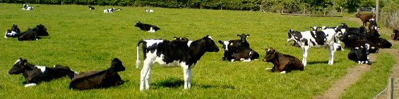

Tuesday, May the 25th, 2010
back to: title, date or indexes
If I am to believe the findings of the Unofficial Blötzmann System™ Het Internet Übersurvey of twenty million fluffyheads—and why should I not?—then I must accept that three out of every four visitors to Hooting Yard alight here to discover the very latest in cow news.

A related survey, not quite as über, suggests, astonishingly, that not all cow news involves the tragic figure of blind, bearded David Blunkett. While I try to get my head around that, you may wish to read and digest this thrilling tale of attempted cow tipping at Wagner Farm.
Cow picture courtesy of an inexplicable world.